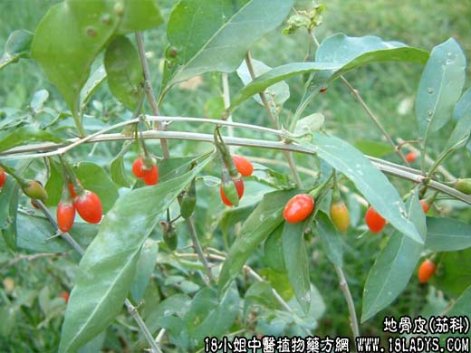

【中药概述】
地骨皮为茄科灌木植物枸杞、或宁夏回枸杞的根皮。甘、寒。归肺、肾经。
1．清退虚热：用于阴虚血热所致的虚劳骨蒸、潮热盗汗及低热久不退等，如（<圣济总录>地骨皮汤）、（地仙散）。
2．肺热咳喘：用于邪热袭肺、肺失肃降，能清肺降火，如（泻白散）。
3．凉血止血：用于血热妄行的吐血、衄血、尿血。可与白茅根，侧柏等同用。
【药效鉴别】
地骨皮清降，既能降泻肺火，又能除肝肾虚热，为泻火、凉血、退蒸之要药。
【临证应用】
治疗手足癣：取地骨皮30g、甘草15g，水煎外洗，日2～3次。
【药理作用】
水煎剂有明显的降压作用和舒张血管、减慢心律作用。对金黄色葡萄球菌、伤寒杆菌、痢疾杆菌的较强的抑制作用。
【化学成分】
含甜菜碱、蜂花酸及亚油酸等。
【用量用法】
10——60g，水煎服，或入剂。
【使用注意】
外感风寒发热及脾虚便溏者不宜。